🛠 開発環境構築
開発環境構築（Minecraft 1.20.1）
このページでは、Minecraft 1.20.1 用 MOD を開発するための環境構築手順をまとめています。
① Minecraft 1.20.1 用インストーラーのダウンロード
以下のリンクから、1.20.1 用の Installer 一式をダウンロードします。
➡ Minecraft 1.20.1 Installer（Google Drive）
↓すべてダウンロード
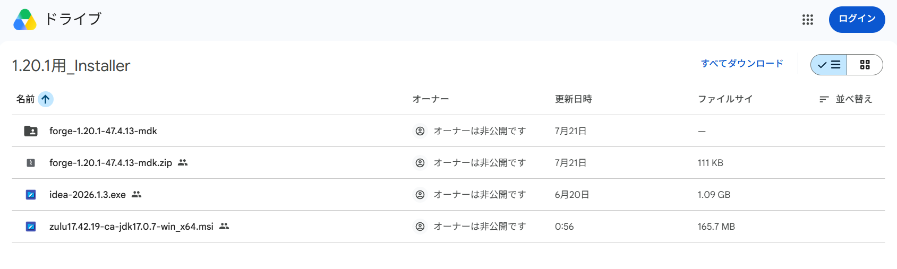
その時に、自分のエクスプローラー上に今回の開発作業で使用するフォルダを作成します。
ダウンロード先を、その場所に指定して、解凍してください。
例: D:\6_Dev\ (合わせる必要はない)
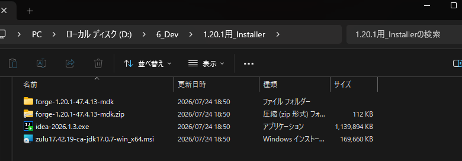
② Java 17 が入っているか確認
コマンドプロンプトを開き、以下を入力します：
java -version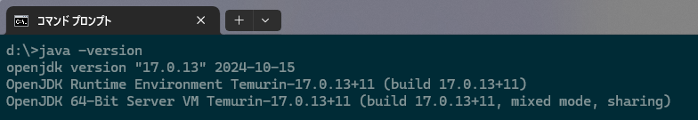
Java17(Version 17であればOK) が表示されない場合は、以下からインストールしてください。
※Version 17が表示された場合はIDEのインストールへ
①で解凍したフォルダ中のzulu17.42.19-ca-jdk17.0.7-win_x64.msiをダブルクリック
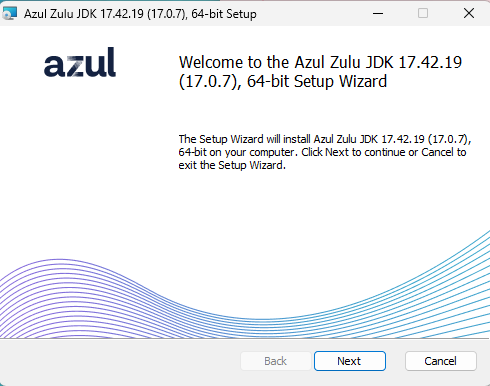
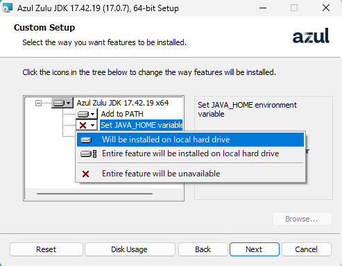
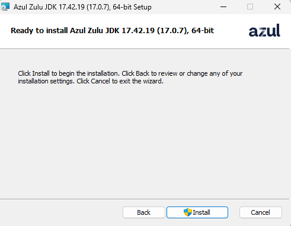
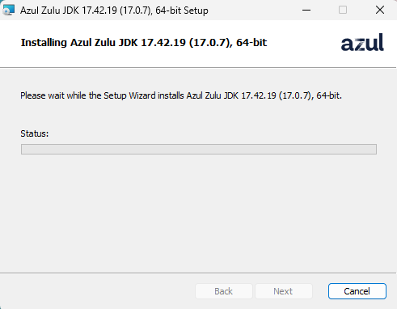
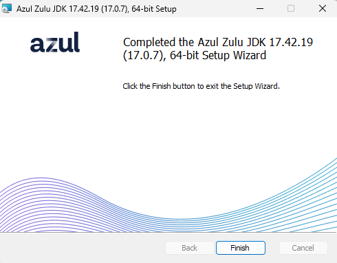
③ IDE（統合開発環境）のインストール
IntelliJ IDEA を①の中のidea-2026.1.3.exeからインストールします。
↓ 画像のようにチェック
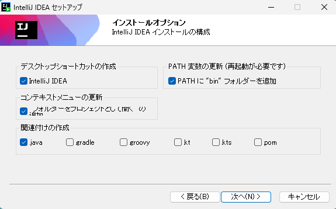
↓ 空き容量があるドライブを自分で選択する。どこでもOK
例: F:\JetBrains\IntelliJ IDEA 2026.1.3 (合わせる必要はない)
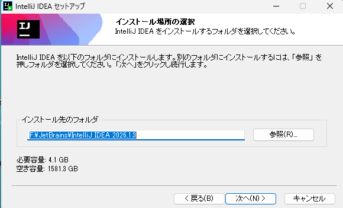
↓ 実行にチェックが入っていることを確認して、完了
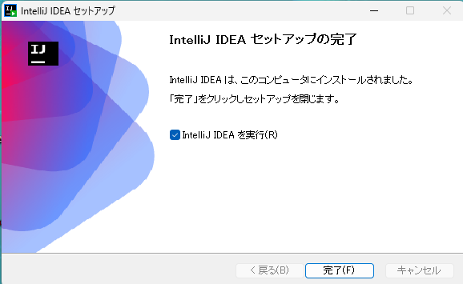
④ Minecraft Forge MDK のインストール
①の中のforge-1.20.1-47.4.13-mdk.zipを①で作ったエクスプローラー上で解凍します。
例: D:\6_Dev\Mods\forge-1.20.1-47.4.13-mdk
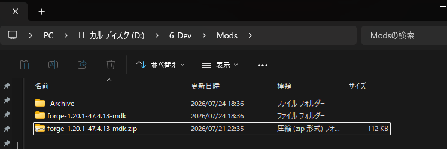
⑤ IntelliJ でプロジェクトを開く
- 日本語設定に変更
- IntelliJ → Open → MDKフォルダを選択
- Trust Project
- JDK を Java17 に設定
- Gradle → genIntellijRuns を実行
- runClient で起動確認
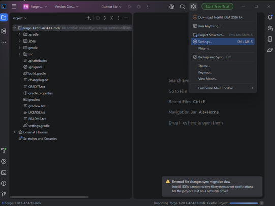
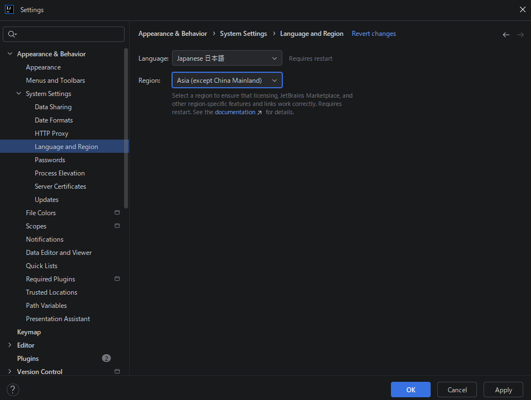
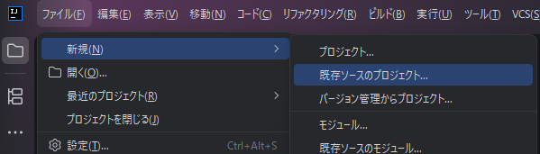
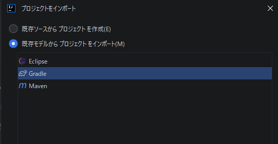
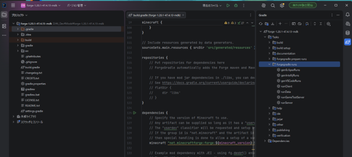
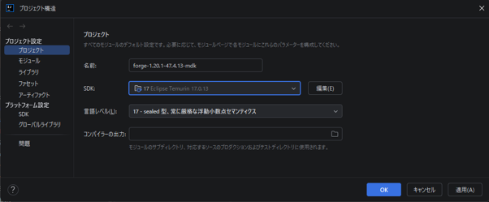